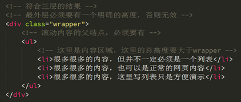
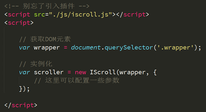
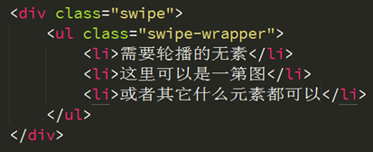
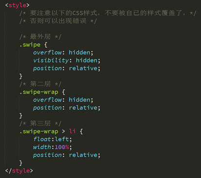
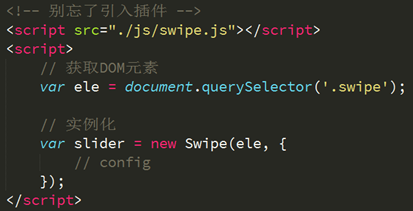
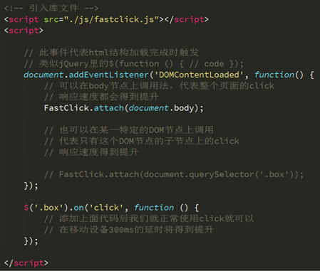

一个可以实现客户端原生滚动效果的类库。
2、build目录下提供了不同版本的iScroll，可根据情况选择使用
3、html要求有3层结构如下图

4、获取wrapper这个最外层结点，然后实例化，如下图

2、html结构要求有三层结构，如下图

3.需要一些基础CSS样式，这些样式要对应到html结构上，如下图

4、获取swipe元素，然后实例化，如下图

1、下载swiper.js，
2、其中文网站非常详细介绍了其使用方法
在移动设备上为了提升click的响应速度，我们选择了使用Zepto事件封装的tap来进行模拟，但是这会带来一个副作用，这个副作用就是“点透”，我们通过一个例子来解释“点透”
从上可以看出Zepto.js有不完善的地方，并且我们有时也希望我们的移动版页面在PC端上也可用，但是PC端是不支持touch事件的，这时我们面临的问题是即提升click在移动设备上的响应速度，又不能使用Zepto.js的tap事件，这时fastclick可以解决这个问题。
如图实际应用的场景，当点击半闭按钮时，如果下面有click事件或链接则会被触发。
2、引入lib目录下的fastclick.js
2、调用方法即可，如下图
